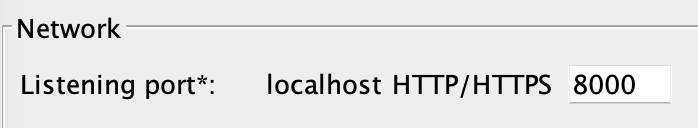
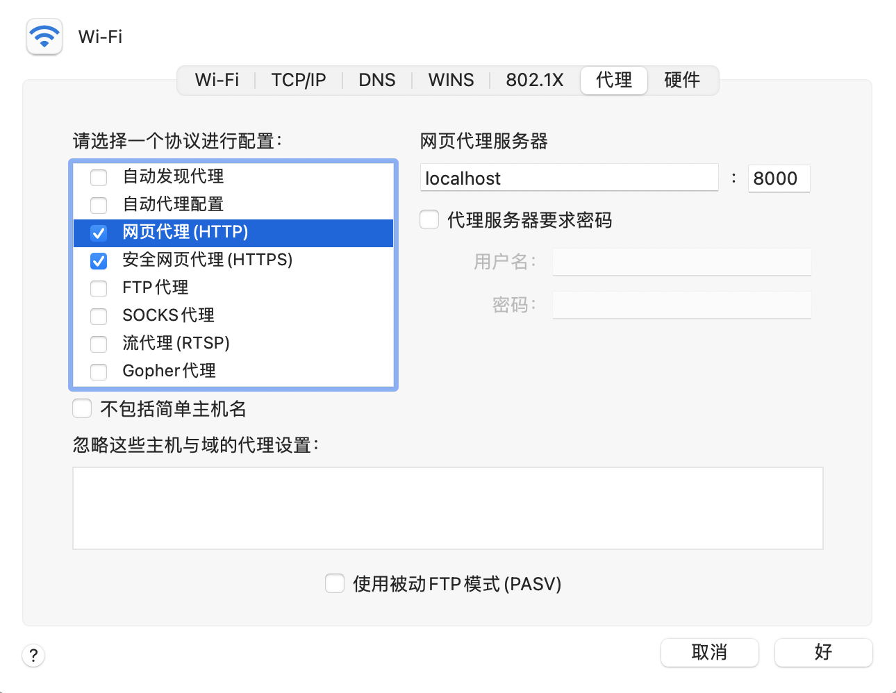

<!DOCTYPE html>
<html>

<head>
    <meta charset="utf-8">
    
    <title>Gatling 官方文档（三）Reference | 杜圆圆的学习笔记</title>
    <meta name="viewport" content="width=device-width, initial-scale=1, maximum-scale=1">

    

    
        <meta property="algolia:search" data-application-id="QVZKZA7CCN" data-api-key="3247c59b2591077db39388602665c9c2" data-index-name="my_blog">
    

    

    
    <link rel="icon" href="/images/icon-dyy.jpeg">
    

    

    

    

    
<link rel="stylesheet" href="/dist/build.css?v=1637200696663.css">


    
<link rel="stylesheet" href="/dist/custom.css?v=1637200696663.css">


    <script>
        window.isPost = true
        window.aomori = {
            
            
            
        }
        window.aomori_logo_typed_animated = false
        window.aomori_search_algolia = true

    </script>

<meta name="generator" content="Hexo 5.4.0"></head>

<body>

    <div class="container">
    <header class="header">
        <div class="header-type">
            
            <div class="header-type-inner">
                
                    <a class="header-type-title" href="/">杜圆圆的学习笔记</a>
                
    
                
            </div>
        </div>
        <div class="header-menu">
            <div class="header-menu-inner">
                
                <a href="/">Home</a>
                
                <a href="/archives">Archives</a>
                
            </div>
            <div class="header-menu-social">
                
    <a class="social" target="_blank" href="https://github.com/dquaner">
        <box-icon type='logo' name='github'></box-icon>
    </a>

            </div>
        </div>

        <div class="header-menu-mobile">
            <div class="header-menu-mobile-inner" id="mobile-menu-open">
                <i class="icon icon-menu"></i>
            </div>
        </div>
    </header>

    <div class="header-menu-mobile-menu">
        <div class="header-menu-mobile-menu-bg"></div>
        <div class="header-menu-mobile-menu-wrap">
            <div class="header-menu-mobile-menu-inner">
                <div class="header-menu-mobile-menu-close" id="mobile-menu-close">
                    <i class="icon icon-cross"></i>
                </div>
                <div class="header-menu-mobile-menu-list">
                    
                    <a href="/">Home</a>
                    
                    <a href="/archives">Archives</a>
                    
                </div>
            </div>
        </div>
    </div>

</div>

    <div class="container">
        <div class="main">
            <section class="inner">
                <section class="inner-main">
                    <div class="post">
    <article id="post-claqv0fll0015xra86rx7hj6e" class="article article-type-post" itemscope
    itemprop="blogPost">

    <div class="article-inner">

        
          
        
        
        

        
        <header class="article-header">
            
  
    <h1 class="article-title" itemprop="name">
      Gatling 官方文档（三）Reference
    </h1>
  

        </header>
        

        <div class="article-more-info article-more-info-post hairline">

            <div class="article-date">
  <time datetime="2022-05-31T16:46:08.000Z" itemprop="datePublished">2022-06-01</time>
</div>

            
            <div class="article-category">
                <a class="article-category-link" href="/categories/devOps/">devOps</a>
            </div>
            

            
            <div class="article-tag">
                <ul class="article-tag-list" itemprop="keywords"><li class="article-tag-list-item"><a class="article-tag-list-link" href="/tags/Gatling/" rel="tag">Gatling</a></li></ul>
            </div>
            

            

        </div>

        <div class="article-entry post-inner-html hairline" itemprop="articleBody">
            <p><a href="#%E6%96%B0%E7%89%B9%E6%80%A7">新特性</a><br>介绍最新发布版本的新特性。 </p>
<p><a href="#%E6%A0%B8%E5%BF%83">核心</a><br>介绍核心概念，比如 simulation，scenario，check，session，assertions。  </p>
<p><a href="#%E7%BB%9F%E8%AE%A1%E6%95%B0%E6%8D%AE">统计数据</a><br>Gatling 产生的统计数据。</p>
<p><a href="#HTTP">HTTP</a><br>用于 HTTP，Websocket，Server Sent Event(SSE) 和 HTTP 轮询的 DSL。 </p>
<p><a href="#JMS">JMS</a><br>用于 JMS 的 DSL。 </p>
<p><a href="#MQTT">MQTT</a><br>用于 MQTT 的 DSL。</p>
<p><a href="#%E6%89%A9%E5%B1%95">扩展</a><br>扩展的官方和社区模块。</p>
<p><a href="#%E5%8D%87%E7%BA%A7">升级</a><br>如何从之前的 Gatling 版本升级。</p>
<p><a href="#%E9%A1%B9%E7%9B%AE%E4%BF%A1%E6%81%AF">项目信息</a><br>更多 Gatling 项目信息。</p>
<hr>
<span id="more"></span>
<h1 id="新特性"><a href="#新特性" class="headerlink" title="新特性"></a>新特性</h1><ul>
<li><a target="_blank" rel="noopener" href="https://gatling.io/docs/gatling/reference/current/whats_new/3.7">What’s New in 3.7</a></li>
<li><a target="_blank" rel="noopener" href="https://gatling.io/docs/gatling/reference/current/whats_new/3.6">What’s New in 3.6</a></li>
<li><a target="_blank" rel="noopener" href="https://gatling.io/docs/gatling/reference/current/whats_new/3.5">What’s New in 3.5</a></li>
<li><a target="_blank" rel="noopener" href="https://gatling.io/docs/gatling/reference/current/whats_new/3.4">What’s New in 3.4</a></li>
<li><a target="_blank" rel="noopener" href="https://gatling.io/docs/gatling/reference/current/whats_new/3.3">What’s New in 3.3</a></li>
<li><a target="_blank" rel="noopener" href="https://gatling.io/docs/gatling/reference/current/whats_new/3.2">What’s New in 3.2</a></li>
<li><a target="_blank" rel="noopener" href="https://gatling.io/docs/gatling/reference/current/whats_new/3.1">What’s New in 3.1</a></li>
<li><a target="_blank" rel="noopener" href="https://gatling.io/docs/gatling/reference/current/whats_new/3.0">What’s New in 3.0</a></li>
</ul>
<h1 id="核心"><a href="#核心" class="headerlink" title="核心"></a>核心</h1><h2 id="概念"><a href="#概念" class="headerlink" title="概念"></a>概念</h2><p><i>了解更多：virtual users, scenarios, simulations, sessions, feeders, checks, assertions, reports </i></p>
<h3 id="领域特定语言-DSL"><a href="#领域特定语言-DSL" class="headerlink" title="领域特定语言 (DSL)"></a>领域特定语言 (DSL)</h3><p>Gatling 提供 <a target="_blank" rel="noopener" href="https://en.wikipedia.org/wiki/Domain-specific_language">DSL</a> 来定义你的负载测试。</p>
<blockquote>
<p>该 DSL 的组件仅仅是对预期效果的<strong>定义</strong>，当你在自己的代码中调用它们时，它们不会产生所需的效果。只有当与其他组件链接并最终将它们传递给 <a href="#setUp">setUp</a> 时，Gatling engine 才能解释它们并产生所需的效果。</p>
</blockquote>
<p>下面的示例不执行 HTTP 请求。它创建了 5 个没有任何影响的 HTTP 请求定义：</p>
<pre><code class="java">for (int i = 0; i &lt; 5; i++) &#123;
  http(&quot;Access Github&quot;).get(&quot;https://github.com&quot;);
&#125;
</code></pre>
<h3 id="不变性"><a href="#不变性" class="headerlink" title="不变性"></a>不变性</h3><blockquote>
<p>大部分 Gatling APIs 例如 DSL components 和 Session，是不可变的（有点类似于 final）。也就是，当你想要改变时，你不可以更新现有的示例，但可以生成新实例。</p>
</blockquote>
<pre><code class="java">HttpRequestActionBuilder request1 = http(&quot;Access Github&quot;).get(&quot;https://github.com&quot;);
// request1 不可改变了
HttpRequestActionBuilder request2 = request1.header(&quot;accept-encoding&quot;, &quot;gzip&quot;);
</code></pre>
<h3 id="虚拟用户-Virtual-User"><a href="#虚拟用户-Virtual-User" class="headerlink" title="虚拟用户 (Virtual User)"></a>虚拟用户 (Virtual User)</h3><p>一些负载测试工具，例如 <a target="_blank" rel="noopener" href="http://httpd.apache.org/docs/2.2/programs/ab.html">ab</a> 和 <a target="_blank" rel="noopener" href="https://github.com/wg/wrk">wrk</a>，在 url bashing 上非常有效，但是不能处理请求间的逻辑。高级的负载测试工具，例如 Gatling，可以处理虚拟用户，每个用户都有自己的数据并可能采用不同的浏览路径。其他工具使用线程实现虚拟用户，Gatling 使用<strong>消息机制</strong>，这样可以更好的扩展并可以轻松处理数千个并发用户。</p>
<h3 id="场景-Scenario"><a href="#场景-Scenario" class="headerlink" title="场景 (Scenario)"></a>场景 (Scenario)</h3><p>为了表现用户行为，测试者需要定义场景，场景会被写成脚本传递给 Gatling。</p>
<p>这些场景可以是和分析工具一起运行的应用程序的测量结果，或者对一个新应用程序期望的用户行为。不论哪一种情况，这些场景的创建是负载测试结果有意义的关键。</p>
<p>一个场景表现一个经典的用户行为，是虚拟用户会遵循的 workflow 。例如，一个标准的电子商务应用场景将会是：</p>
<pre><code>1. 访问主页
2. 选择一个浏览类别
3. 在当前类别中搜索
4. 打开一个产品介绍
5. 返回
6. 打开另一个产品介绍
7. 购买产品
8. 登陆
9. 打开收银台
10. 付款
11. 登出
</code></pre>
<p>场景被表示为与 DSL（<a target="_blank" rel="noopener" href="http://en.wikipedia.org/wiki/Domain-specific_language">域特定语言</a>）结合使用的脚本。这允许快速编写场景并轻松维护现有场景。</p>
<p>这是一个简单的场景示例：</p>
<pre><code class="java">scenario(&quot;Standard User&quot;)
  .exec(http(&quot;Access Github&quot;).get(&quot;https://github.com&quot;))
  .pause(2, 3)
  .exec(http(&quot;Search for &#39;gatling&#39;&quot;).get(&quot;https://github.com/search?q=gatling&quot;))
  .pause(2);
</code></pre>
<p>我们可以容易地猜到，该场景：</p>
<ul>
<li>名为 <code>Standard User</code></li>
<li>包括 2 个 HTTP 请求</li>
<li>包括 2 次暂停（Pause）时间</li>
</ul>
<p>Pauses 用来模拟用户的思考时间。当一个真实的用户点击一个链接，页面会在浏览器中加载，用户非常可能阅读页面内容并决定下一个动作。</p>
<p>在测试中，当用户点击一个按钮或链接，HTTP 请求会发送到应用程序。每一个 HTTP 请求都容易理解（除页面资源之外）：</p>
<ol>
<li><code>Access Github</code> 是对 <code>https://github.com</code> 的 GET 请求</li>
<li><code>Search for &#39;gatling&#39;</code> 是对 <code>https://github.com/search?q=gatling</code> 的 GET 请求</li>
</ol>
<p>更多信息，查看 <a href="#Scenario">Scenario</a> 部分。</p>
<h3 id="模拟-Simulation"><a href="#模拟-Simulation" class="headerlink" title="模拟 (Simulation)"></a>模拟 (Simulation)</h3><p>模拟是对负载测试的描述。它描述了（可能是多个）用户群如何运行：它们将执行那些场景以及如何注入新的虚拟用户。</p>
<p>下面是一个模拟定义的例子：</p>
<pre><code class="java">ScenarioBuilder stdUser = scenario(&quot;Standard User&quot;);
ScenarioBuilder admUser = scenario(&quot;Admin User&quot;);
ScenarioBuilder advUser = scenario(&quot;Advanced User&quot;);

setUp(
    stdUser.injectOpen(atOnceUsers(2000)),
    admUser.injectOpen(nothingFor(60), rampUsers(5).during(400)),
    advUser.injectOpen(rampUsers(500).during(200))
);
</code></pre>
<p>更多信息，查看 <a href="#Simulation">Simulation Setup</a> 部分。</p>
<h3 id="会话-Session"><a href="#会话-Session" class="headerlink" title="会话 (Session)"></a>会话 (Session)</h3><p>每个虚拟用户都由一个 Session 支持。这些 sessions 是沿着 scenario 工作流的实际消息。一个 Session 基本上是一个状态占位符，测试人员可以注入或捕获该占位符，以及使用占位符储存数据。</p>
<p>更多信息，查看 <a href="#Session">Session</a> 部分。</p>
<h3 id="供给器（Feeders）"><a href="#供给器（Feeders）" class="headerlink" title="供给器（Feeders）"></a>供给器（Feeders）</h3><p>当被测试的应用程序提供了身份验证时，测试也应该考虑到这一点并使用数据来测试<strong>登录</strong>、<strong>登出</strong>、<strong>仅允许某些用户执行操作</strong>等。</p>
<p>Gatling 没有提供工具来生成这种测试数据。Feeders 是提供给测试人员的一个方便的 API，可以将外部源中的数据注入到虚拟用户的会话中。</p>
<p>更多信息，查看 <a href="#Feeders">Feeders</a> 部分。</p>
<h3 id="检查-Checks"><a href="#检查-Checks" class="headerlink" title="检查 (Checks)"></a>检查 (Checks)</h3><p>每当一个请求发送到服务器，通常会有一个 response 从服务器发回 Gatling 。Gatling 可以使用 Checks 分析该 response 。</p>
<p>Check 是一个 response 处理器，可以捕获 response 的一些部分并验证它们是否满足给定的条件。例如，当发送一个 HTTP 请求是，你可能期望得到一个 HTTP 重定向；使用 check，可以验证 response 的状态码是否为 <code>30x</code> 。</p>
<p>Checks 还可以用来捕获一些元素并将它们储存在 Session 中以备后用，例如用来构造下一个请求。</p>
<p>更多信息，查看 <a href="#Checks">Checks</a> 部分。</p>
<h3 id="断言-Assertions"><a href="#断言-Assertions" class="headerlink" title="断言 (Assertions)"></a>断言 (Assertions)</h3><p>断言用于定义 Gatling 统计数据的验收标准（例如 99% 响应时间），断言使 Gatling 失败并返回测试的错误状态代码。</p>
<p>更多信息，查看 <a href="#Assertions">Assertions</a> 部分。</p>
<h3 id="报告-Reports"><a href="#报告-Reports" class="headerlink" title="报告 (Reports)"></a>报告 (Reports)</h3><p>默认情况下，模拟结束后会自动生成报告。报告由 HTML 文件组成，因此它们可以在任何带有网络浏览器的设备上查看。</p>
<p>更多信息，查看 <a href="#%E6%8A%A5%E5%91%8A">报告</a> 部分。</p>
<h3 id="持续时间-Durations"><a href="#持续时间-Durations" class="headerlink" title="持续时间 (Durations)"></a>持续时间 (Durations)</h3><blockquote>
<p>在 Gatling 中，默认的 duration 参数单位是秒。</p>
</blockquote>
<h2 id="Simulation"><a href="#Simulation" class="headerlink" title="Simulation"></a>Simulation</h2><p><i>了解 Gatling simulation 的主要部分：DSL imports，scenario 定义，simulation 定义，hooks </i></p>
<p><code>Simulation</code> 是你的测试必须继承的父类，这样 Gatling 才可以启动测试。</p>
<p>建议你的 Simulation 名不要以 <code>Test</code> 开头，一些工具，如 maven surefire，会积极地考虑所有具有这种命名模式的类都是由它们处理的，它们会尝试启动这些类。</p>
<h3 id="DSL-imports"><a href="#DSL-imports" class="headerlink" title="DSL imports"></a>DSL imports</h3><p>Gatling DSL 需要一些 imports：</p>
<pre><code class="java">// Gatling 核心结构 DSL 需要的引入
import io.gatling.javaapi.core.*;
import static io.gatling.javaapi.core.CoreDsl.*;

// Gatling HTTP DSL 需要的引入
import io.gatling.javaapi.http.*;
import static io.gatling.javaapi.http.HttpDsl.*;

// 如果你不需要使用 jdbcFeeder 可以忽略
import io.gatling.javaapi.jdbc.*;
import static io.gatling.javaapi.jdbc.JdbcDsl.*;

// 用于自定义 durations with a unit, 如 Duration.ofMinutes(5)
import java.time.Duration;
</code></pre>
<blockquote>
<p>不要尝试用你的 IDE “优化 imports”，你会搞砸一切，直接将这些 imports 复制粘贴到你需要用 Gatling DSL 的地方。<br>请注意，任何不属于这些包的类都被认为是私有的，而不是 API，因此随时可能更改，恕不另行通知。</p>
</blockquote>
<h3 id="setUp"><a href="#setUp" class="headerlink" title="setUp"></a>setUp</h3><p>大部分测试都可以被提取到其他帮助类中，所以你可以使用自己的测试库：scenarios，protocols，headers，injection profiles 等。</p>
<p>Simulations 中唯一强制部分是必须在构造函数中调用一次 <code>setUp</code> 方法来注册测试组件。</p>
<pre><code class="java">Scenariobuilder scn = scenario(&quot;scn&quot;); //etc

setUp(
    scn.injectOpen(atOnceUsers(1))
);
</code></pre>
<p>这会将一个用户注入到 <code>scn</code> 场景中。</p>
<p>在同一个 Simulation 中可能会有多个群体，即具有相关 injection profile 的 scenarios：</p>
<pre><code class="java">ScenarioBuilder scn1 = scenario(&quot;scn1&quot;); // etc...
ScenarioBuilder scn2 = scenario(&quot;scn2&quot;); // etc...

setUp(
  scn1.injectOpen(atOnceUsers(1)),
  scn2.injectOpen(atOnceUsers(1))
);
</code></pre>
<p>更多 scenarios 的信息，查看 <a href="#Scenario">此处</a> 。</p>
<p>更多 injection profiles 的信息，查看 <a href="#Injection">此处</a> 。</p>
<h3 id="Protocols-配置"><a href="#Protocols-配置" class="headerlink" title="Protocols 配置"></a>Protocols 配置</h3><p>Protocols 配置可以附加在：</p>
<ul>
<li>setUp 上，在这种情况下，它们将应用于所有群体</li>
<li>或每个群体，因此它们可以具有不同的配置</li>
</ul>
<pre><code class="java">// 全局 HttpProtocol 配置
setUp(
  scn1.injectOpen(atOnceUsers(1)),
  scn2.injectOpen(atOnceUsers(1))
).protocols(httpProtocol);

// 为每个群体配置不同的 HttpProtocols
setUp(
  scn1.injectOpen(atOnceUsers(1))
    .protocols(httpProtocol1),
  scn2.injectOpen(atOnceUsers(1))
    .protocols(httpProtocol2)
);
</code></pre>
<p>更多 protocols 的信息，查看 <a href="#HTTP-Protocol">HttpProtocol</a> 部分。</p>
<h3 id="验收标准"><a href="#验收标准" class="headerlink" title="验收标准"></a>验收标准</h3><p>Assertions 配置在 setUp 上。</p>
<pre><code class="java">setUp(scn.injectOpen(atOnceUsers(1)))
  .assertions(global().failedRequests().count().is(0L));
</code></pre>
<p>更多 assertions 的信息，查看 <a href="#Assertions">Assertions</a> 部分。</p>
<h3 id="全局暂停配置"><a href="#全局暂停配置" class="headerlink" title="全局暂停配置"></a>全局暂停配置</h3><p>可以使用多种方法在 Simulation 上配置暂停：</p>
<pre><code class="java">// 配置全局的暂停
setUp(scn.injectOpen(atOnceUsers(1)))
  // 为 simulation 禁用暂停
  .disablePauses()
  // 每次暂停的时间，在 `pause(duration)` 元素中指定
  .constantPauses()
  // 每次暂停的时间，在 `pause(duration)` 元素中指定平均值，并且遵循均匀分布
  .uniformPauses(0.5)
  .uniformPauses(Duration.ofSeconds(2))
  // 每次暂停的时间，在 `pause(duration)` 元素中指定平均值，并且遵循指数分布
  .exponentialPauses()
  // 每次暂停的时间，由提供的方法计算（以毫秒为单位）
  // 下面的情况填充的暂停时间被绕过
  .customPauses(session -&gt; 5L);

// 为每一个群体配置不同的暂停
setUp(
  scn1.injectOpen(atOnceUsers(1))
    .disablePauses(),
  scn2.injectOpen(atOnceUsers(1))
    .exponentialPauses()
);
</code></pre>
<h3 id="调整吞吐量"><a href="#调整吞吐量" class="headerlink" title="调整吞吐量"></a>调整吞吐量</h3><p>一些用户可能希望根据每秒吞吐量/请求而不是虚拟用户进行分析。</p>
<p>如果你的虚拟用户每次仅执行一次请求，你应该选择一个 <a href="#%E5%BC%80%E6%94%BE%E5%BC%8F%E6%A8%A1%E5%9E%8B">开放的工作负载模型</a> ，例如 <code>constantUsersPerSec</code> 。否则，你会遇到麻烦，因为你将无法控制执行哪个请求。不过，你可以尝试并使用可以<strong>全局</strong>或<strong>按场景定义</strong>的 <code>throttle</code> 方法。</p>
<p><code>throttle(节流)</code> 的作用是为吞吐量设置一个上限，该上限通常由你定义的 scenarios 和 injection profiles 生成，以便你可以按照自己的方式对其进行调整。<strong>它只能减少正常的吞吐量，不能增加它。</strong></p>
<p>节流目前仅支持 HTTP 请求和 JMS 。</p>
<blockquote>
<ul>
<li>Gatling 将在 throttle 结束时自动中断测试，就像使用 <a href="#%E6%9C%80%E9%95%BF%E6%8C%81%E7%BB%AD%E6%97%B6%E9%97%B4">maxDuration</a> 一样。</li>
<li>请注意，所有多余的流量都会被推入一个 unbounded queue，如果你的正常吞吐量远高于 throttle，可能会导致 <code>OutOfMemoryError</code> 。</li>
<li>启用 <code>throttle</code> 时会自动禁用 <code>pause</code>，以便它可以控制吞吐量的定义。</li>
</ul>
</blockquote>
<pre><code class="java">// 全局的 throttle 配置
setUp(scn.injectOpen(constantUsersPerSec(100).during(Duration.ofMinutes(30))))
  .throttle(
    reachRps(100).in(10),
    holdFor(Duration.ofMinutes(1)),
    jumpToRps(50),
    holdFor(Duration.ofHours(2))
  );

// 为每个群体配置不同的 throttle
setUp(
  scn1.injectOpen(atOnceUsers(1))
    .throttle(reachRps(100).in(10)),
  scn2.injectOpen(atOnceUsers(1))
    .throttle(reachRps(20).in(10))
);
</code></pre>
<p>该模拟将在 10 秒内逐渐达到 100 request/s，然后保持此吞吐量 1 分钟，跳转到 50 request/s，最后保持此吞吐量 2 小时。</p>
<p>节流的构建块为:</p>
<ul>
<li><code>reachRps(target).in(duration)</code>: 在给定时间 <code>duration</code> 内以固定斜率到达吞吐量 <code>target</code></li>
<li><code>jumpToRps(target)</code>: 立刻跳转到一个给定的吞吐量 <code>target</code> </li>
<li><code>holdFor(duration)</code>: 保持当前吞吐量一段时间</li>
</ul>
<blockquote>
<p><code>in</code> 是 Kotlin 的保留关键字。可以使用反引号 `in` 保护它，也可以使用 <code>during</code> 别名。</p>
</blockquote>
<h3 id="最长持续时间"><a href="#最长持续时间" class="headerlink" title="最长持续时间"></a>最长持续时间</h3><p>使用 <code>maxDuration</code> 可以基于一个时间限制强制终止测试的运行，即使还有一些运行中的虚拟用户。如果你需要在无法预测的情况下限制模拟的持续时间，这会很有用。</p>
<pre><code class="java">setUp(scn.injectOpen(rampUsers(1000).during(Duration.ofMinutes(20)))).maxDuration(Duration.ofMinutes(10));
</code></pre>
<h3 id="Hook"><a href="#Hook" class="headerlink" title="Hook"></a>Hook</h3><p>Gatling 提供两个挂钩：</p>
<ul>
<li><code>before</code> 在 simulation 实际运行之前执行任意代码</li>
<li><code>after</code> 在 simulation 实际运行之后执行任意代码</li>
</ul>
<p>生命周期如下：</p>
<pre><code>1. 启动 Gatling
2. 调用 Simulation 构造函数，类中的所有代码在执行 `before` 和 `after` 钩子中都不会延迟
3. 执行 `before` 挂钩
4. 运行 Simulation
5. Simulation 终止
6. 执行 `after` 挂钩
7. 生成 HTML 报告（如果已启用）
8. 关闭 Gatling
</code></pre>
<pre><code class="java">@Override
public void before() &#123;
  System.out.println(&quot;Simulation is about to start!&quot;);
&#125;

@Override
public void after() &#123;
  System.out.println(&quot;Simulation is finished!&quot;);
&#125;
</code></pre>
<blockquote>
<p>在 hooks 中不能使用 Gatling DSL，因为 Gatling DSL 仅用于负载测试。你只能使用你自己的代码。<br>如果要寻找执行的 Gatling DSL，可以考虑使用<a href="#%E9%A1%BA%E5%BA%8F%E5%9C%BA%E6%99%AF">顺序场景</a>。</p>
</blockquote>
<h2 id="Injection"><a href="#Injection" class="headerlink" title="Injection"></a>Injection</h2><p><i>Injection profiles，开放式及封闭式工作负载模型的不同</i></p>
<p>使用 <code>injectOpen</code> 和 <code>injectClosed</code> 方法（在 Scala 中使用 <code>inject</code> ）来定义用户的 injection profile 。该方法将一系列 injection 步骤作为参数，这些 injection 步骤会顺序被执行。</p>
<h3 id="开放式-vs-封闭式-工作负载模型"><a href="#开放式-vs-封闭式-工作负载模型" class="headerlink" title="开放式 vs 封闭式 工作负载模型"></a>开放式 vs 封闭式 工作负载模型</h3><p>在负载模型方面，系统有两种不同的行为模式：</p>
<ul>
<li>封闭式系统，可以控制用户的并发数</li>
<li>开放式系统，可以控制用户的到达率</li>
</ul>
<p>确保使用与系统实际的负载相匹配的合适的负载模型。</p>
<p><strong>封闭式系统</strong>是限制并发用户数的系统。在满负荷情况下，一个新用户只有在另一个用户退出时才能有效地进入系统。以这种方式运行的典型系统是：</p>
<ul>
<li>所有接线员都在忙碌状态的呼叫中心</li>
<li>当系统满负荷时，用户需要在队列中等待的票务网站</li>
</ul>
<p>相反，<strong>开放式系统</strong>不能控制并发用户的数量：用户不停地到达即使应用程序无法为他们提供服务。大部分网站以此方式运行。</p>
<blockquote>
<p>如果你的系统无法将多余的流量推入队列，不要考虑并发用户。<br>如果你的系统是开放式的而你在负载测试中使用了一个封闭式的工作负载模型，你的测试会被破坏，并且你正在测试一些不同的想象行为。在这种情况下，当测试系统开始出现问题时，响应时间会增加，journey time 会变长。因此造成并发用户数增加，并且 injector 会减慢以匹配你设置的假想上限。</p>
</blockquote>
<p>你可以在 <a target="_blank" rel="noopener" href="https://www.usenix.org/legacy/event/nsdi06/tech/full_papers/schroeder/schroeder.pdf">此处</a> 以及我们的 <a target="_blank" rel="noopener" href="https://gatling.io/2018/10/04/gatling-3-closed-workload-model-support/">博客</a> 阅读更多开放式和封闭式的模型。</p>
<blockquote>
<p>开放式和封闭式工作负载模型是矛盾的，你不能把它们混合在同一个 injection profile 中。</p>
</blockquote>
<h3 id="开放式模型"><a href="#开放式模型" class="headerlink" title="开放式模型"></a>开放式模型</h3><pre><code class="java">setUp(
    scn.injectOpen(
        nothingFor(4), // 1
        atOnceUsers(10), // 2
        rampUsers(10).during(5), // 3
        constantUsersPerSec(20).during(15), // 4
        constantUsersPerSec(20).during(15).randomized(), // 5
        rampUsersPerSec(10).to(20).during(10), // 6
        rampUsersPerSec(10).to(20).during(10).randomized(), // 7
        stressPeakUsers(1000).during(20) // 8
    ).protocols(httpProtocol)
);
</code></pre>
<p>开放式模型 profile injection 的构造块为：</p>
<ol>
<li><code>nothingFor(duration)</code>: 暂停一段给定的时间</li>
<li><code>atOnceUsers(nbUsers)</code>: 立刻注入给定数量的用户</li>
<li><code>rampUsers(nbUsers).during(duration)</code>: 在给定时间的时间窗口上注入均匀分布的给定数量的用户</li>
<li><code>onstantUsersPerSec(rate).during(duration)</code>: 在给定时间内，以定义的恒定速率（每秒用户数）注入用户，用户注入的时间间隔恒定</li>
<li><code>constantUsersPerSec(rate).during(duration).randomized</code>: 在给定时间内，以定义的恒定速率（每秒用户数）注入用户，用户注入的时间间隔随机</li>
<li><code>rampUsersPerSec(rate1).to(rate2).during(duration)</code>: 在给定时间内，从开始的速率到目标速率（每秒用户数）注入用户，用户注入的时间间隔恒定</li>
<li><code>rampUsersPerSec(rate1).to(rate2).during(duration).randomized</code>: 在给定时间内，从开始的速率到目标速率（每秒用户数）注入用户，用户注入的时间间隔随机</li>
<li><code>stressPeakUsers(nbUsers).during(duration)</code>: 根据拉伸到一定时间的<a target="_blank" rel="noopener" href="http://en.wikipedia.org/wiki/Heaviside_step_function">海维赛德阶跃函数</a>的平滑近似注入给定数量的用户</li>
</ol>
<h3 id="封闭式模型"><a href="#封闭式模型" class="headerlink" title="封闭式模型"></a>封闭式模型</h3><pre><code class="java">setUp(
    scn.injectClosed(
        constantConcurrentUsers(10).during(10),  // 1
        rampConcurrentUsers(10).to(20).during(10)  // 2
    )
);
</code></pre>
<p>封闭式模型 profile injection 的构造块为：</p>
<ol>
<li><code>constantConcurrentUsers(nbUsers).during(duration)</code>: 注入用户使系统中的并发用户数保持不变</li>
<li><code>rampConcurrentUsers(fromNbUsers).to(toNbUsers).during(duration)</code>: 注入用户使系统中并发用户的数量从 <code>fromNbUsers</code> 线性变化到 <code>toNbUsers</code></li>
</ol>
<blockquote>
<p>降低并发用户的数量不会迫使现有用户中断。虚拟用户终止的唯一方法是完成他们的场景。</p>
</blockquote>
<h3 id="Meta-DSL"><a href="#Meta-DSL" class="headerlink" title="Meta DSL"></a>Meta DSL</h3><p>可以使用 Meta DSL 的元素以一种更简单的方式编写测试。如果你希望串联 levels 和 ramps 来达到你的应用程序的极限（有时叫做容量负载测试），你可以使用常规的 DSL 手动串联，并使用 map 和 flatMap 进行循环。但是现在有一种使用 Meta DSL 的替代方案。</p>
<p><strong><code>incrementUsersPerSec</code></strong>  </p>
<pre><code class="java">setUp(
    // 生成一个开放式的工作负载模型 injection profile
    // 5 个 levels: 分别每秒到达 10, 15, 20, 25, 30 个用户
    scn.injectOpen( 
    incrementUsersPerSec(5.0) // 每个 level 增加的用户每秒
      .times(5) // num of levels
      .eachLevelLasting(10) // 每个 level 持续 10 秒
      .separatedByRampsLasting(10) // 被持续 10 秒的线性 ramps 隔开
      .startingFrom(10) // Double, 从每秒到达 10 个用户开始
  )
);
</code></pre>
<p><strong><code>incrementConcurrentUsers</code></strong></p>
<pre><code class="java">setUp(
  // 生成一个封闭式的工作负载模型 injection profile
  // 5 个 levels: 分别 10, 15, 20, 25, 30 个并发用户数
  scn.injectClosed(
    incrementConcurrentUsers(5) // 每个 level 增加的并发用户数
      .times(5)
      .eachLevelLasting(10) // 每个 level 持续 10 秒
      .separatedByRampsLasting(10) // separated by linear ramps lasting 10 seconds
      .startingFrom(10) // Int, 从 10 个并发用户数开始
  )
);
</code></pre>
<p><code>incrementUsersPerSec</code> 提供给开放式工作负载，<code>incrementConcurrentUsers</code> 提供给封闭式工作负载（用户/秒 vs 并发用户数）。</p>
<p><code>separatedByRampsLasting</code> 和 <code>startingFrom</code> 都是可选项，如果你没有指定 ramp，测试一完成就会从一个 level 跳到另一个 level。如果没有指定启动用户的数量，测试将以 0 个并发用户或 0 个用户/秒启动，并立即进入下一步。</p>
<h3 id="并发场景"><a href="#并发场景" class="headerlink" title="并发场景"></a>并发场景</h3><p>你可以在同一个 <code>setUp</code> 块中配置多个场景以在同一时间启动且并发执行。</p>
<pre><code class="Java">setUp(
  scenario1.injectOpen(injectionProfile1),
  scenario2.injectOpen(injectionProfile2)
);
</code></pre>
<h3 id="顺序场景"><a href="#顺序场景" class="headerlink" title="顺序场景"></a>顺序场景</h3><p>还可以使用 <code>andThen</code> 来串联场景，这样当父场景中的所有用户都终止后子场景会立刻启动。</p>
<pre><code class="Java">setUp(
  parent.injectClosed(injectionProfile)
    // 当最后一个 parent user 终止，child1 和 child2 会同时启动
    .andThen(
      child1.injectClosed(injectionProfile)
        // 当最后一个 child1 user 终止，grandChild 就会启动
        .andThen(grandChild.injectClosed(injectionProfile)),
      child2.injectClosed(injectionProfile)
    )
);
</code></pre>
<h3 id="禁用-Gatling-Enterprise-Load-Sharding"><a href="#禁用-Gatling-Enterprise-Load-Sharding" class="headerlink" title="禁用 Gatling Enterprise Load Sharding"></a>禁用 Gatling Enterprise Load Sharding</h3><p>默认情况下，当从多个节点运行分布式测试时，Gatling Enterprise 将在所有 injectors 中分发你的 injection profile。</p>
<p>在实际场景中这可能不是理想的行为，通常在运行只有一个用户的初始场景时，为了获取一些认证令牌。实际上，只有一个节点会运行这个用户，而其他节点没有初始化的令牌。</p>
<p>你可以使用 <code>noShard</code> 来禁用负载分片。在这种情况下，所有节点都会使用模拟中定义的 injection and throttling profiles 。</p>
<pre><code class="Java">setUp(
  // parent load won&#39;t be sharded
  parent.injectOpen(atOnceUsers(1)).noShard()
    .andThen(
      // child load will be sharded
      child1.injectClosed(injectionProfile)
    )
);
</code></pre>
<h2 id="Scenario"><a href="#Scenario" class="headerlink" title="Scenario"></a>Scenario</h2><p><i>了解如何执行 <strong>requests, pauses, loops and conditions</strong></i></p>
<p>可以用 Gatling 编写场景的不同组件的参考。</p>
<h3 id="启动"><a href="#启动" class="headerlink" title="启动"></a>启动</h3><p><code>scenario</code> 是启动一个新场景的方式。</p>
<pre><code class="Java">ScenarioBuilder scn = scenario(&quot;Scenario&quot;);
</code></pre>
<p>除了制表键 <code>\t</code> 之外，可以在场景的名称中使用任何字符。</p>
<h3 id="结构元素"><a href="#结构元素" class="headerlink" title="结构元素"></a>结构元素</h3><p>本节的所有组件可以：</p>
<ul>
<li>附加到一个场景上</li>
<li>直接创建，这样它们可以作为参数传递，存储在常量中等</li>
<li>附加到另一个组件上</li>
</ul>
<p><strong>Exec</strong><br><strong>Pause</strong><br><strong>Loop statements</strong><br><strong>Conditional statements</strong><br><strong>Errors handling</strong><br><strong>Groups</strong></p>
<h2 id="Session"><a href="#Session" class="headerlink" title="Session"></a>Session</h2><h2 id="Checks"><a href="#Checks" class="headerlink" title="Checks"></a>Checks</h2><h2 id="Assertions"><a href="#Assertions" class="headerlink" title="Assertions"></a>Assertions</h2><h2 id="配置"><a href="#配置" class="headerlink" title="配置"></a>配置</h2><h2 id="操作"><a href="#操作" class="headerlink" title="操作"></a>操作</h2><p><i>了解如何调整操作系统以获得更多性能，配置 <strong>打开文件限制</strong> 以及 <strong>内核和网络</strong> 。</i></p>
<h3 id="IPv4-vs-IPv6"><a href="#IPv4-vs-IPv6" class="headerlink" title="IPv4 vs IPv6"></a>IPv4 vs IPv6</h3><p>我们发现 IPv6（在 Java 中默认启用）有时会造成一些性能问题，所以在启动脚本时可以使用以下选项禁用 IPv6：</p>
<pre><code class="sh">-Djava.net.preferIPv4Stack=true
-Djava.net.preferIPv6Addresses=false
</code></pre>
<p>如果你实在需要 IPv6，请编辑启动脚本。</p>
<h3 id="操作系统调整"><a href="#操作系统调整" class="headerlink" title="操作系统调整"></a>操作系统调整</h3><p>Gatling 在正常操作期间会消耗大量打开的文件句柄。通常，操作系统会限制此数量，因此你可能需要在所选操作系统中调整一些选项，以便可以打开许多新的 sockets 并实现 heavy load 。</p>
<ul>
<li><p><strong>打开文件限制</strong><br>大部分操作系统可以使用 <code>ulimit -n</code> 命令来更改 open-files 的限制。比如：<code>ulimit -n 65535</code>。但是，这样仅仅可以更改当前 shell session 的限制，在系统层面永久更改限制的操作因系统而异。<br>如果要为所有系统用户永久的设置 soft 以及 hard 值，最多允许打开 65535 个文件，编辑 <code>/etc/security/limits.conf</code> 文件并追加以下两行：</p>
<pre><code>*       soft    nofile  65535
*       hard    nofile  65535
</code></pre>
<p>  保存文件，启动一个新的 session 来使新的限制生效。你可以使用 <code>ulimit -a</code> 命令来验证限制被正确的设置了。</p>
<p>  对于 <code>Debian</code> 和 <code>Ubuntu</code>，你应该启用 PAM 用户限制，在以下路径添加 <code>session required pam_limits.so</code> :</p>
<ul>
<li><code>/etc/pam.d/common-session</code></li>
<li><code>/etc/pam.d/common-session-noninteractive</code>（如果该文件存在）</li>
<li><code>/etc/pam.d/sshd</code>（如果你是通过 SSH 访问机器）</li>
</ul>
<p>  同样的，如果你通过 SSH 访问机器，需要确保在 <code>/etc/ssh/sshd_config</code> 文件中配置了 <code>UseLogin yes</code>。</p>
<p>  更多调整如下：</p>
<pre><code class="sh"># 为测试申请更多的端口
sudo sysctl -w net.ipv4.ip_local_port_range=&quot;1025 65535&quot;

# 增加可能打开的文件描述符的最大数量
echo 300000 &lt;/td&gt;&lt;td&gt; sudo tee /proc/sys/fs/nr_open
echo 300000 &lt;/td&gt;&lt;td&gt; sudo tee /proc/sys/fs/file-max
</code></pre>
</li>
<li><p><strong>内核和网络调整</strong><br>在 <code>/etc/sysctl.conf</code> 中添加如下设置来调整内核和网络：</p>
<pre><code class="yaml">net.ipv4.tcp_max_syn_backlog = 40000
net.core.somaxconn = 40000
net.core.wmem_default = 8388608
net.core.rmem_default = 8388608
net.ipv4.tcp_sack = 1
net.ipv4.tcp_window_scaling = 1
net.ipv4.tcp_fin_timeout = 15
net.ipv4.tcp_keepalive_intvl = 30
net.ipv4.tcp_tw_reuse = 1
net.ipv4.tcp_moderate_rcvbuf = 1
net.core.rmem_max = 134217728
net.core.wmem_max = 134217728
net.ipv4.tcp_mem  = 134217728 134217728 134217728
net.ipv4.tcp_rmem = 4096 277750 134217728
net.ipv4.tcp_wmem = 4096 277750 134217728
net.core.netdev_max_backlog = 300000
</code></pre>
</li>
</ul>
<h1 id="统计数据"><a href="#统计数据" class="headerlink" title="统计数据"></a>统计数据</h1><h2 id="时间点"><a href="#时间点" class="headerlink" title="时间点"></a>时间点</h2><h2 id="报告"><a href="#报告" class="headerlink" title="报告"></a>报告</h2><h1 id="HTTP"><a href="#HTTP" class="headerlink" title="HTTP"></a>HTTP</h1><h2 id="HTTP-Protocol"><a href="#HTTP-Protocol" class="headerlink" title="HTTP Protocol"></a>HTTP Protocol</h2><h2 id="HTTP-Request"><a href="#HTTP-Request" class="headerlink" title="HTTP Request"></a>HTTP Request</h2><h2 id="HTTP-Checks"><a href="#HTTP-Checks" class="headerlink" title="HTTP Checks"></a>HTTP Checks</h2><h2 id="SSL"><a href="#SSL" class="headerlink" title="SSL"></a>SSL</h2><h2 id="HTTP-Helpers"><a href="#HTTP-Helpers" class="headerlink" title="HTTP Helpers"></a>HTTP Helpers</h2><h2 id="Recorder"><a href="#Recorder" class="headerlink" title="Recorder"></a>Recorder</h2><p><i>了解如何 <strong>配置</strong> 你的 Recorder 并将其作为 <strong>HTTP 代理</strong> 或 <strong>HAR 转换器</strong> 运行。</i></p>
<p>Gatling Recorder 帮助你快速生成 scenarios，通过 <strong>作为 HTTP 代理</strong> 或者 <strong>转换 HAR（Http Achive）文件</strong>。无论哪种方式，Recorder 都会生成一个简单的 simulation 来模拟你记录的浏览。</p>
<p>如果你使用 bundle，你可以通过 <code>$GATLING_HOME/bin/recorder.sh</code> 脚本来启动 Recorder，它会打开如下窗口：<br></p>
<h3 id="配置-1"><a href="#配置-1" class="headerlink" title="配置"></a>配置</h3><ul>
<li><p><strong>监听代理端口</strong><br>在 Recorder 中，你需要定义一个端口（为 HTTP 和 HTTPS）：本地代理端口。这是你的浏览器必须连接的端口，这样 Recorder 才能捕获你的浏览。</p>
  

<p>  然后，配置你的浏览器来使用该端口。</p>
<p>  以下是 Firefox 浏览器的配置方法，打开<code>高级设置 &gt; 网络设置</code>，更新<code>连接设置</code>：<br>  </p>
<p>  Chrome 浏览器中，打开<code>设置 &gt; 高级 &gt; 系统 &gt; 打开您计算机的代理设置</code>，添加<code>网页代理(HTTP)</code>和<code>安全网页代理(HTTPS)</code>，记得取消<code>自动代理配置</code>：</p>
  
  </li>
<li><p><strong>HTTPS 模式</strong><br>与仅作为传递者的常规代理不同，Recorder 作为中间人并破译你的 HTTPS 流量。因此，Recorder 会被浏览器认定为一种安全威胁，你需要用一些方式告诉浏览器 everything is fine。Recorder 有三种模式：</p>
<ul>
<li><p>Certificate Authority<br>使用这种模式，Recorder 会使用一个私有的 <a target="_blank" rel="noopener" href="https://en.wikipedia.org/wiki/Certificate_authority">Certificate Authority (CA)</a> 为每一个访问的域来生成即时的签名证书。你可以请求 Gatling 为你生成 CA 证书和私钥文件，你也可以自己提供这些。</p>
<p>  你需要将 CA 证书导入浏览器的 keystore 中：    </p>
<ul>
<li><a target="_blank" rel="noopener" href="https://support.google.com/chrome/a/answer/6342302?hl=en">Google Chrome 桌面</a> 官方文档  </li>
<li><a target="_blank" rel="noopener" href="https://support.mozilla.org/en-US/kb/setting-certificate-authorities-firefox">Firefox 桌面</a> 官方文档  </li>
<li>对于 iPhone/iPad 的 OSX 系统，你只需要通过邮件发送你的证书文件，然后打开附件  </li>
<li><a target="_blank" rel="noopener" href="https://support.google.com/nexus/answer/2844832?hl=en">Android</a> 官方文档</li>
</ul>
</li>
<li><p>Provided KeyStore<br>你可以传递一个完整的 Java KeyStore (JKS 或者 PKCS#12 格式)，包括需要使用的证书。如果你已经为了你的应用生成过 Java keystore 并且想要为记录复用它，使用该模式。<br>如上所诉，你需要将 CA 证书导入浏览器的 keystore 中。</p>
</li>
<li><p>Self-signed Certificate (传统模式)<br>Recorder 将会为每一个域使用同一个自签名证书。这种模式是传统模式，并且由于浏览器的安全强化趋势，使用它变得越来越复杂。<br>浏览器会提示一个安全警告，并询问你是否要为此域添加一个安全异常。如果没有提示，表示你已经注册了一个合法的证书，并且浏览器拒绝使用更低安全性的证书替换它。你需要首先从你的证书注册里移除它。</p>
</li>
</ul>
</li>
<li><p><strong>传出代理</strong><br>如果你必须通过代理访问你的网络应用，你可以在此处配置它。你可以为 HTTP 和 HTTPS 指定两个不同的端口。即使 HTTP 和 HTTPS 位于传出代理的同一端口上，也需要明确指定两者。</p>
</li>
<li><p><strong>过滤器</strong><br>允许你过滤一些你不想记录的请求。例如，如果你不想记录 CSS 文件，你可以在 DenyList 部分加入 Java 正则表达式 <code>.*\\.css</code>。<br>白名单和黑名单条目之间的评估顺序可以通过 <code>strategy</code> 设置来确定。你可以选择先评估白名单或黑名单。</p>
</li>
<li><p><strong>获取嵌入资源</strong><br>如果你勾选了 <code>‘Infer html resources?’</code> 选项，Recorder 会通过以下方式获取嵌入式资源：</p>
<ul>
<li>在 HTTP 协议定义上添加带有适当 white/black lists 的 <code>inferHtmlResources</code>。</li>
<li>解析 HTML 响应体来检索嵌入的 HTML 资源。</li>
<li>从生成的 Scenario 中过滤与嵌入的 HTML 资源相对应的请求。</li>
</ul>
<p>  Gatling 无法将 所有 HTML 中的嵌入资源 作为 嵌入在 HTML 中的 css 中的图像 检索。目前，其余资源作为常规请求按顺序加载。</p>
</li>
<li><p><strong>HTTP 请求命名</strong><br>默认情况下，Gatling 会为记录和转换的 http 请求使用前缀 <code>request_</code>。如果勾选了 <code>‘Use class name as request prefix?’</code> 选项，http 请求会使用 simulation 类作为请求名的前缀。</p>
</li>
<li><p><strong>响应体</strong><br>如果勾选了 <code>‘Save &amp; check response bodies?’</code> 选项，响应体将转储到与请求正文相同的文件夹中。并且 simulation 将包括额外的检查 —— 使用  RawFileBody 来确保实际的响应体与转储相匹配。你可能想编辑这些检查，例如改用 ElFileBody 来参数化预期的响应体。</p>
</li>
</ul>
<h3 id="运行"><a href="#运行" class="headerlink" title="运行"></a>运行</h3><p>当所有配置完成后，点击 <code>Start</code> 按钮来启动 Recorder。</p>
<ul>
<li><p><strong>记录事件</strong><br>当你浏览你的应用时，recorder 会记录以下三类事件：</p>
<ul>
<li><strong>Requests</strong>: 浏览器发出的请求</li>
<li><strong>Pauses</strong>: 每次请求之间的时间间隔</li>
<li><strong>Tags</strong>: 人工设置的标记</li>
</ul>
</li>
<li><p><strong>标记事件</strong><br>为了使你的 scenario 更好理解，你可以添加标签，它们会在 scenario 中以注释的形式出现：<code>/* my tag */</code>。<br>填写提供的文本字段，然后点击 <code>Add</code> 按钮。然后，标签将显示在位于下方的列表中。例如：<code>TAG | my tag</code></p>
</li>
<li><p><strong>停止录制</strong><br>完成 scenario 录制后，点击 <code>Stop</code> 按钮将其保存为配置中定义的格式。</p>
</li>
</ul>
<h3 id="HAR-文件"><a href="#HAR-文件" class="headerlink" title="HAR 文件"></a>HAR 文件</h3><p>你可以导入一个 HAR（HTTP Archive）文件到 Recorder 中并将它转换成 Gatling simulation。HAR 文件可以通过 <strong>Chrome 开发者工具</strong> 或者 <strong>Firebug &amp; NetExport Firebug 扩展</strong> 获得。</p>
<p>使用 <strong>Chrome 开发者工具</strong> ，打开 <code>网络</code> 选项，确保已选中 <code>Preserve log（保留日志）</code> 复选框，否则当你改变页面是时日志会重置。选择要导出的请求，然后右键单击并选择 <code>全部复制为 HAR</code> 并将剪贴板中的内容保存到文件中。</p>
<p>不要使用 <a target="_blank" rel="noopener" href="http://www.charlesproxy.com/">Charles Proxy</a> 代理。 Charles 是一个优秀的工具并且具有 HAR 导出功能，但它同时是一个代理，所以当你使用它时，你改变了 HTTP 的行为，HAR 将包括此处发生的请求，例如 CONNECT 请求。</p>
<p>在 Recorder 右上角的下拉框中选择 <code>HAR converter</code> 模式来导入 HAR。</p>
<h3 id="Headless-模式"><a href="#Headless-模式" class="headerlink" title="Headless 模式"></a>Headless 模式</h3><p>除了 GUI 模式，Gatling 还提供了一个简单的 CLI 接口，从而促进了录制 simulations 或者从 HAR 文件转换 simulations 的自动化。</p>
<p>可以使用 <code>recorder.conf</code> 文件或者 <code>-cli / --headless</code> 命令行启用 Headless 模式。<code>代理</code> 和 <code>HAR</code> 模式都支持 headless（你可以使用命令行选项 <code>-m / --mode</code> 来设置要使用 <code>代理</code> 还是 <code>HAR</code> ）。</p>
<ul>
<li><p><strong>代理</strong>  </p>
<p>  在<code>代理</code>模式下，Recorder 启动后会立刻开始监听你的浏览器发出的请求。想要停止 Recorder 并且生成 Simulation，可以用以下方式之一 ‘kill’ Recorder：<br>  1.使用 <code>Ctrl-C</code> 发送 ‘kill’ 信号；<br>  2.使用 <code>.gatling-recorder-pid</code> 中记录的 Recorder 进程 ID ‘kill’ Recorder 的进程：<code>cat .gatling-recorder-pid | xargs kill</code> 。</p>
</li>
<li><p><strong>HAR 转换器</strong></p>
<p>  在 <code>Har</code> 模式下，Recorder 会将提供的 HAR 文件转换为 Simulation 并退出。</p>
</li>
</ul>
<h3 id="命令行选项"><a href="#命令行选项" class="headerlink" title="命令行选项"></a>命令行选项</h3><p>对喜欢使用命令行的用户，可以将以下命令行选项传递给 Recorder：</p>
<table style="width:100%;">
<tr style="text-align: left;"><th> Option (short) </th><th> Option (long) </th><th> Description </th></tr>
<tr><td>-lp    </td><td> –local-port </td><td>    Local Proxy HTTP/HTTPS port</td></tr>
<tr><td>-ph    </td><td> –proxy-host </td><td>    Outgoing proxy host</td></tr>
<tr><td>-pp    </td><td> –proxy-port </td><td> Outgoing proxy port</td></tr>
<tr><td>-pps </td><td>    –proxy-port-ssl    </td><td> Outgoing proxy SSL port</td></tr>
<tr><td>-sf    </td><td> –simulations-folder </td><td>    Output folder for generated simulations</td></tr>
<tr><td>-rf    </td><td> –resources-folder    </td><td> Output folder for generated resources</td></tr>
<tr><td>-cn    </td><td> –class-name </td><td>    Name of the generated simulation</td></tr>
<tr><td>-pkg </td><td>    –package </td><td> Package of the generated simulation</td></tr>
<tr><td>-enc </td><td>    –encoding </td><td>    Encoding used in the Recorder</td></tr>
<tr><td>-fr [true/false] </td><td> –follow-redirect [true/false]</td><td> </td></tr>
<tr><td>-ar [true/false] </td><td> –automatic-referer [true/false]</td><td> </td></tr>
<tr><td>-fhr [true/false] </td><td>    –fetch-html-resources [true/false]</td><td> </td></tr>
<tr><td>-m [Proxy/Har] </td><td> –mode [Proxy/Har]</td><td> </td></tr>
<tr><td>-cli [true/false] </td><td> –headless [true/false]</td><td> </td></tr>
<tr><td>-hf    </td><td> –har-file    </td><td> The HAR file to convert (if mode is Har)</td></tr>
</table>

<blockquote>
<p>命令行选项会覆盖已保存的首选项。</p>
</blockquote>
<h3 id="系统属性"><a href="#系统属性" class="headerlink" title="系统属性"></a>系统属性</h3><p>以下 2 个系统属性可以控制代理模式使用的自定义证书 keystore ：</p>
<pre><code>gatling.recorder.keystore.path 
gatling.recorder.keystore.passphrase
</code></pre>
<h2 id="HTTP-Polling"><a href="#HTTP-Polling" class="headerlink" title="HTTP Polling"></a>HTTP Polling</h2><h2 id="WebSocket"><a href="#WebSocket" class="headerlink" title="WebSocket"></a>WebSocket</h2><h2 id="SSE-Server-Sent-Event"><a href="#SSE-Server-Sent-Event" class="headerlink" title="SSE (Server Sent Event)"></a>SSE (Server Sent Event)</h2><h1 id="JMS"><a href="#JMS" class="headerlink" title="JMS"></a>JMS</h1><h1 id="MQTT"><a href="#MQTT" class="headerlink" title="MQTT"></a>MQTT</h1><h1 id="扩展"><a href="#扩展" class="headerlink" title="扩展"></a>扩展</h1><h2 id="Maven-插件"><a href="#Maven-插件" class="headerlink" title="Maven 插件"></a>Maven 插件</h2><h2 id="Gradle-插件"><a href="#Gradle-插件" class="headerlink" title="Gradle 插件"></a>Gradle 插件</h2><h2 id="SBT-插件"><a href="#SBT-插件" class="headerlink" title="SBT 插件"></a>SBT 插件</h2><h2 id="Jenkins-插件"><a href="#Jenkins-插件" class="headerlink" title="Jenkins 插件"></a>Jenkins 插件</h2><h2 id="Bamboo-插件"><a href="#Bamboo-插件" class="headerlink" title="Bamboo 插件"></a>Bamboo 插件</h2><h2 id="TeamCity-插件"><a href="#TeamCity-插件" class="headerlink" title="TeamCity 插件"></a>TeamCity 插件</h2><h2 id="Functional-specs"><a href="#Functional-specs" class="headerlink" title="Functional specs"></a>Functional specs</h2><h2 id="第三方插件"><a href="#第三方插件" class="headerlink" title="第三方插件"></a>第三方插件</h2><h1 id="升级"><a href="#升级" class="headerlink" title="升级"></a>升级</h1><ul>
<li><a target="_blank" rel="noopener" href="https://gatling.io/docs/gatling/reference/current/upgrading/3.6-to-3.7/">Migrating from 3.6 to 3.7</a></li>
<li><a target="_blank" rel="noopener" href="https://gatling.io/docs/gatling/reference/current/upgrading/3.4-to-3.5/">Migrating from 3.4 to 3.5</a></li>
<li><a target="_blank" rel="noopener" href="https://gatling.io/docs/gatling/reference/current/upgrading/3.3-to-3.4/">Migrating from 3.3 to 3.4</a></li>
<li><a target="_blank" rel="noopener" href="https://gatling.io/docs/gatling/reference/current/upgrading/2.3-to-3.0/">Migrating from 2.3 to 3.0</a></li>
</ul>
<h1 id="项目信息"><a href="#项目信息" class="headerlink" title="项目信息"></a>项目信息</h1>
        </div>

    </div>

    

    

    

    

    

    
<nav class="article-nav">
  
    <a href="/2022/06/01/Gatling-%E5%AE%98%E6%96%B9%E6%96%87%E6%A1%A3%EF%BC%88%E5%9B%9B%EF%BC%89Guides/" id="article-nav-newer" class="article-nav-link-wrap">
      <div class="article-nav-caption">下一篇</div>
      <div class="article-nav-title">
        
          Gatling 官方文档（四）Guides
        
      </div>
    </a>
  
  
    <a href="/2022/06/01/Gatling-%E5%AE%98%E6%96%B9%E6%96%87%E6%A1%A3%EF%BC%88%E4%BA%8C%EF%BC%89Tutorials/" id="article-nav-older" class="article-nav-link-wrap">
      <div class="article-nav-caption">上一篇</div>
      <div class="article-nav-title">Gatling 官方文档（二）Tutorials</div>
    </a>
  
</nav>


    <section class="share">
        <div class="share-title">分享</div>
        <a class="share-item" target="_blank"
            href="https://twitter.com/share?text=Gatling 官方文档（三）Reference - 杜圆圆的学习笔记&url=https://dquaner.github.io/2022/06/01/Gatling-%E5%AE%98%E6%96%B9%E6%96%87%E6%A1%A3%EF%BC%88%E4%B8%89%EF%BC%89Reference/">
            <box-icon type='logo' name='twitter'></box-icon>
        </a>
        <a class="share-item" target="_blank"
            href="https://www.facebook.com/sharer.php?title=Gatling 官方文档（三）Reference - 杜圆圆的学习笔记&u=https://dquaner.github.io/2022/06/01/Gatling-%E5%AE%98%E6%96%B9%E6%96%87%E6%A1%A3%EF%BC%88%E4%B8%89%EF%BC%89Reference/">
            <box-icon name='facebook-square' type='logo' ></box-icon>
        </a>
        <!-- <a class="share-item" target="_blank"
            href="https://service.weibo.com/share/share.php?title=Gatling 官方文档（三）Reference - 杜圆圆的学习笔记&url=https://dquaner.github.io/2022/06/01/Gatling-%E5%AE%98%E6%96%B9%E6%96%87%E6%A1%A3%EF%BC%88%E4%B8%89%EF%BC%89Reference/&pic=">
            <div class="n-icon n-icon-weibo"></div>
        </a> -->
    </section>

</article>


</div>
                </section>
            </section>

            
            <aside class="sidebar sidebar-search-fix">
                

    <div class="search">
    <div class="has-icon-right">
        <input type="text" class="form-input" id="search" placeholder="SEARCH" autocomplete="off">
        <div class="form-icon">
            <box-icon name='search' color="#3c4859"></box-icon>
        </div>
    </div>
    <div class="search-result" id="search-ps"></div>
</div>


<div class="widget" id="widget">
    
      
  <div class="widget-wrap">
    <div class="widget-inner">
      <div class="toc post-toc-html"></div>
    </div>
  </div>

    
      
  <div class="widget-wrap widget-cate">
    <div class="widget-title"><span>Categories</span></div>
    <div class="widget-inner">
      <ul class="category-list"><li class="category-list-item"><a class="category-list-link" href="/categories/Java/">Java</a></li><li class="category-list-item"><a class="category-list-link" href="/categories/devOps/">devOps</a></li><li class="category-list-item"><a class="category-list-link" href="/categories/git/">git</a></li><li class="category-list-item"><a class="category-list-link" href="/categories/%E6%B5%8B%E8%AF%95%E5%BC%80%E5%8F%91/">测试开发</a></li></ul>
    </div>
  </div>


    
      
  <div class="widget-wrap widget-tags">
    <div class="widget-title"><span>Tags</span></div>
    <div class="widget-inner">
      <ul class="tag-list" itemprop="keywords"><li class="tag-list-item"><a class="tag-list-link" href="/tags/Cucumber/" rel="tag">Cucumber</a></li><li class="tag-list-item"><a class="tag-list-link" href="/tags/ELK/" rel="tag">ELK</a></li><li class="tag-list-item"><a class="tag-list-link" href="/tags/Gatling/" rel="tag">Gatling</a></li><li class="tag-list-item"><a class="tag-list-link" href="/tags/Monitoring/" rel="tag">Monitoring</a></li><li class="tag-list-item"><a class="tag-list-link" href="/tags/Sentry/" rel="tag">Sentry</a></li><li class="tag-list-item"><a class="tag-list-link" href="/tags/maven/" rel="tag">maven</a></li><li class="tag-list-item"><a class="tag-list-link" href="/tags/%E8%AE%BE%E8%AE%A1%E6%A8%A1%E5%BC%8F/" rel="tag">设计模式</a></li></ul>
    </div>
  </div>


    
      
  <div class="widget-wrap widget-recent-posts">
    <div class="widget-title"><span>Recent Posts</span></div>
    <div class="widget-inner">
      <ul>
        
          <li>
            <a href="/2022/11/21/Cucumber-%E5%AE%98%E6%96%B9%E6%8C%87%E5%8D%97%EF%BC%88%E4%B8%80%EF%BC%89%E5%BC%95%E8%A8%80/">Cucumber 官方指南（一）引言</a>
          </li>
        
          <li>
            <a href="/2022/11/15/%E8%AE%BE%E8%AE%A1%E6%A8%A1%E5%BC%8F%EF%BC%9A%E4%B8%83%E5%A4%A7%E8%AE%BE%E8%AE%A1%E5%8E%9F%E5%88%99/">设计模式：七大设计原则</a>
          </li>
        
          <li>
            <a href="/2022/08/06/GIT-%E5%B8%B8%E7%94%A8%E5%91%BD%E4%BB%A4/">GIT 常用命令</a>
          </li>
        
          <li>
            <a href="/2022/06/01/Gatling-%E5%AE%98%E6%96%B9%E6%96%87%E6%A1%A3%EF%BC%88%E5%9B%9B%EF%BC%89Guides/">Gatling 官方文档（四）Guides</a>
          </li>
        
          <li>
            <a href="/2022/06/01/Gatling-%E5%AE%98%E6%96%B9%E6%96%87%E6%A1%A3%EF%BC%88%E4%B8%89%EF%BC%89Reference/">Gatling 官方文档（三）Reference</a>
          </li>
        
      </ul>
    </div>
  </div>

    
      
  <div class="widget-wrap widget-archive">
    <div class="widget-title"><span>Archive</span></div>
    <div class="widget-inner">
      <ul class="archive-list"><li class="archive-list-item"><a class="archive-list-link" href="/archives/2022/">2022</a></li><li class="archive-list-item"><a class="archive-list-link" href="/archives/2021/">2021</a></li></ul>
    </div>
  </div>


    
</div>

<div id="backtop"><i class="icon icon-arrow-up"></i></div>
            </aside>
            
        </div>
    </div>

    <footer class="footer">
    <div class="footer-wave">
        <svg xmlns="http://www.w3.org/2000/svg" viewBox="0 0 1440 320"><path fill="#3c4859" fill-opacity="1" d="M0,160L60,181.3C120,203,240,245,360,240C480,235,600,181,720,186.7C840,192,960,256,1080,261.3C1200,267,1320,213,1380,186.7L1440,160L1440,320L1380,320C1320,320,1200,320,1080,320C960,320,840,320,720,320C600,320,480,320,360,320C240,320,120,320,60,320L0,320Z"></path></svg>
    </div>

    <div class="footer-wrap">
        <div class="footer-inner"> 
            杜圆圆的学习笔记 &copy; 2022<br>
            Powered By Hexo · Theme By <a href="https://github.com/lh1me/hexo-theme-aomori" target="_blank">Aomori</a>
        </div>
    </div>

</footer>


<script src="/dist/build.js?1637200696663.js"></script>


<script src="/dist/custom.js?1637200696663.js"></script>


</body>

</html>